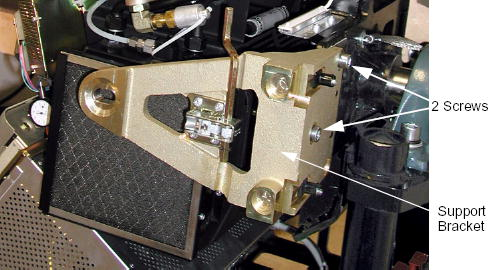
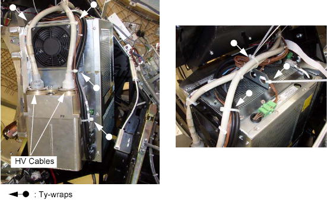

GEMS Proprietary Class: A
Direction 5117807-800, Rev# A
GEMS Proprietary Class: A |
| Required Persons | Preliminary Reqs | Procedure | Finalization |
|---|---|---|---|
| 1 | Timing Not Applicable | 45 mins | 120 mins |
Procedure summary:
If possible, upload JEDI database (from JEDI to console)
Remove power unit mounting screws
Replace power unit
Reattach wiring
Reload JEDI software and appropriate database
No tools or test equipment required.
No consumables required.
No replacement parts required.
No general safety information.
| Condition | Reference | Eff |
|---|---|---|
Before beginning this procedure, please read the gantry safety information. | - |
| FOLLOW LOCKOUT/TAGOUT PROCEDURES FOR POWER & ROTATIONAL HAZARDS. | |
| FAILURE TO LOCK THE GANTRY COULD RESULT IN INJURY, SHOULD THE GANTRY SUDDENLY MOVE AND STRIKE YOU. | |
| Make sure you engage the locking mechanism before you remove the power unit. |
Upload JEDI database (from JEDI) if you wish to retain the existing database after new Power Unit installation. In most cases you will want to perform this step, however it may not be possible, depending on the failed KV control board. If it’s not possible, move on.
Move table to its lowest elevation.
Remove, and set aside, both gantry side covers, top covers, front cover.
Turn OFF all 3 switches (Axial Drive, HVDC, 120VAC) on the STC backplane.
Remove power at main disconnect (A1) panel. Use proper Lockout/Tagout procedures.
Remove the two M12 screws from the right front gantry cover mounting bracket, remove and set aside the bracket.
Illustration 1: Support Bracket Removal

Rotate the Gantry until the power unit reaches the 3 o’clock position.
Engage gantry rotational lock.
Cut any tie-wraps holding the cables to the power unit.
Use the spanner wrench to remove the high voltage cable connector from the tank on the power unit.
Ground the ends of the H.V. cable to the Gantry frame, to endure no voltage exists at the end of the cable.
Use rags or paper towels to wipe excess oil from the H.V. Cable Connector and tank well.
Stuff the tank wells with paper towels to absorb any oil.
Illustration 2: HV Cable Configuration

Disconnect the following cable connectors:
Fan Power Cable Connector
CT I/F J3 Connector (<-> ORP)
J5 Connector (<-> DAS)
J6 Connector (<-> Auxiliary Assy)
J7 Connector (<-> Power I/F)
PI Filter J1 (<-> Auxiliary Assy, HEMIT Tank)
U1, U2 (<-> Slip Ring)
KV Cont J3 (<-> Auxiliary Assy)
J14 (<-> Auxiliary Assy)
Illustration 3: Cable Connections

Remove the power unit from the gantry:
| SEVERE INJURY POSSIBLE. | |
| IF THE HOIST HOOK'S LOCK NUT IS LOOSE, THEN THE JEDI POWER UNIT MIGHT DROP FROM THE HOIST, WITH THE RESULTING IN SERIOUS INJURY TO SERVICE PERSONNEL. | |
| before using the hoist, check to make certain that the hook's lock nut is not loose. If it is loose, do not use the hoist. instead, order a new hoist. |
Attach the hoist to the boom arm in the gantry.
Attach the hoist lifting chain to the lifting bracket on the power unit top.
Remove slack from the hoist chain.
Remove the six M12 screws that fasten the power unit to the rotating base.
Use the hoist to lower the power unit to the floor.
Ensure that Lockout/Tagout procedure has been applied, and that gantry power is removed.
Ensure that gantry rotational lock is engaged and gantry does not rotate by attempting to rotate gantry by hand.
Using the hoist, attach new power unit to gantry.
Torque the six M12 screws to 30Nm, then torque the six M12 screws to standard torque value.
Replace the control module covers (part1 and part2) of the new power unit with the existing one.
Ensure torque specifications are followed on all screws.
Download JEDI software using Flash Download Tool.
Download JEDI database (to JEDI) if you wish to restore the database from the replaced KV control board.
Meter verification.
HV Tank Resistor verification (bleeder test).
Reset generator TnT data.
Filament calibration.